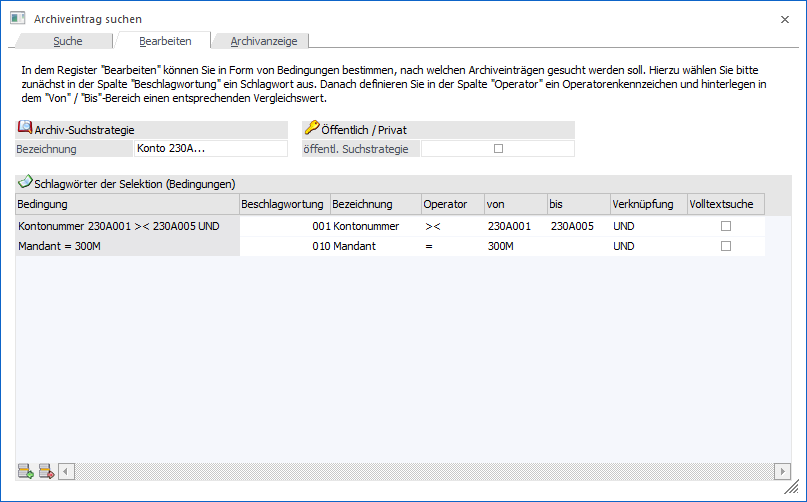
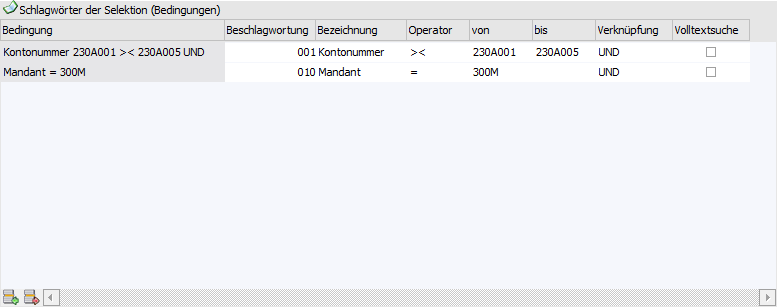
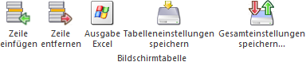

In dem Register "Bearbeiten" können fixe oder temporäre Suchstrategien angelegt bzw. editiert werden.
Hinweis
Um eine Suchstrategie auszuführen, muss nur der Button "Vor" oder der Button "Anzeigen" bzw. die Taste F5 gedrückt werden (auch eine Anwahl es Register "Archivanzeige" ist möglich). Hierdurch werden auch neue bzw. editierte Suchstrategien automatisch gespeichert.

Folgende Einstellungen und Bedingungen können bei einer Suchstrategie hinterlegt werden:
Archiv-Suchstrategie
Ø Bezeichnung
In diesem Feld kann die Bezeichnung der Archivsuche eingegeben werden, wobei hier immer das erste Schlagwort und der Suchbegriff vorgeschlagen wird. Wurde im Register "Suche" der Eintrag "temporäre Archivsuche" gewählt, so kann hier keine Eingabe erfolgen.
Öffentlich / Privat
Ø öffentliche Suchstrategie
Wenn die Option "öffentl. Suchstrategie" aktiviert wurde, dann steht diese Suche allen Benutzern zur Verfügung. Bleibt die Option inaktiv, dann steht die Suche nur jenem Benutzer zur Verfügung, der die Suche erstellt hat. Wurde im Register "Suche" der Eintrag "temporäre Archivsuche" gewählt, so kann hier keine Auswahl erfolgen.
Tabelle "Schlagwörter der Selektion (Bedingungen)"

Ø Beschlagwortung
An dieser Stelle wird das Schlagwort ausgewählt, dessen Inhalt einem Suchbegriff / einer Bedingung (siehe "von / bis") entsprechend soll.
Ø Bezeichnung
In dieser Spalte wird die Bezeichnung des Schlagworts angezeigt.
Ø Operator
Mit Hilfe des Operators wird angegeben, wie der Suchbegriff dem Schlagwort entsprechen soll:
ü = - gleich
Wenn diese Option
verwendet wird, dann werden alle Archiveinträge angezeigt, die gleich dem
Suchbegriff sind (z.B. wenn als Suchbegriff Kontonummer und Wert 230A001 gewählt
wurden, dann werden nur die Einträge angezeigt, bei denen die Kontonummer
230A001 ist).
Hinweis
Mit dieser Funktion kann auch nach Leereinträgen gesucht werden. D.h. wird bei der Beschlagwortung ein leeres Schlagwort vergeben, kann danach gesucht werden, indem der zu suchende Wert einfach leer gelassen wird (dabei darf die Checkbox "Volltextsuche" nicht aktiviert werden).
ü >< - von / bis
Bei dieser
Option stehen 2 Eingabefelder für Wert 1 und Wert 2 zur Verfügung. Es werden nur
jene Einträge angezeigt, die zwischen den beiden Werten liegen.
ü > - größer
Wird diese Option
verwendet, dann werden alle Archiveinträge angezeigt, die größer als der
eingegebene Wert sind.
ü < - kleiner
Wird diese
Option verwendet, dann werden alle Archiveinträge angezeigt, die kleiner als der
eingegebene Wert sind.
Ø von / bis
In diesen Spalten wird, abhängig vom Operator, der bzw. die Suchbegriffe hinterlegt.
Ø Verknüpfung
Über die Spalte "Verknüpfung" kann entschieden werden, wie die einzelnen Bedingungen miteinander verknüpft werden sollen. Hierfür stehen die folgenden Varianten zur Verfügung:
ü UND
Wenn die Bedingungen mit
"UND" verknüpft werden, dann müssen beide Selektionskriterien zutreffen, damit
eine Eintrag gefunden wird.
ü ODER
Wenn die Bedingungen mit
"ODER" verknüpft werden, dann muss eines der Kriterien zutreffen, egal wie viele
Kriterien hinterlegt wurden.
Ø Volltextsuche
Ist diese Option aktiv, dann wird der Suchbegriff im kompletten ausgewählten Feld gesucht. Bleibt die Option inaktiv, dann wird der Suchbegriff nur am Anfang des ausgewählten Feldes gesucht - diese Art der Suche ist - im Vergleich zur Volltextsuche - etwas rascher.
Tabellenbuttons

Ø Zeile einfügen
Mit dem Button "Zeile einfügen" oder durch Anwählen der nächsten freien Zeile kann eine weitere Beschlagwortung gewählt werden. Dieser Vorgang kann so lange wiederholt werden, bis alle Selektionskriterien hinterlegt wurden.
Ø Zeile entfernen
Durch Anklicken des "Zeile entfernen"-Buttons kann die markierte Bedingung gelöscht werden.
Ø Ausgabe Excel
Durch Anwahl des Buttons "Ausgabe Excel" wird der Inhalt der Tabelle an Microsoft Excel übergeben.
Ø Tabelleneinstellungen speichern
Die Spalten einer Tabelle können grundsätzlich an beliebige Positionen verschoben, bzw. in der Breite entsprechend angepasst werden. Durch Anwahl des Buttons "Tabelleneinstellungen speichern" werden die Einstellungen benutzerspezifisch gespeichert und bei dem nächsten Aufruf des Programmpunktes wieder vorgeschlagen.
Ø Gesamteinstellungen speichern
Im Gegensatz zu "Tabelleneinstellungen speichern" können mit "Gesamteinstellungen speichern" mehrere Tabellenaufbauten gespeichert und nach Wunsch geladen werden. Zusätzlich werden Sonderfunktionen der Tabelle (z.B. "Spalte gruppieren") ebenfalls bei der Speicherung bedacht.